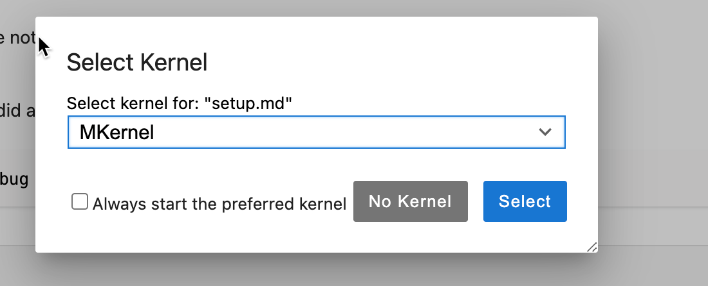
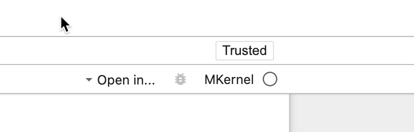

Setup#
I have used Jupyter notebooks for EG-247 Digital Signal Processing for a number of reasons:
I can easily produce maths-rich textbook quality notes using the Markdown system provided for documentation blocks.
I can generate a slide-show from my notes but also print them as PDF files for your convenience.
I can interweave live coding examples with my notes and execute and change these examples in a live classroom.
… more interestingly, you can take the notebooks and experiment with the computing examples yourself!
However, to fully access all the examples that have been provided as Jupyter notebooks for EG-247 you will need to install both MATLAB (I used MATLAB 2019a) and Python 3 (I used Anaconda 3) and this is something of a technical challenge.
The installation of Anaconda 3 (which includes Jupyter Notebook) and MATLAB is described elsewhere but must be done before you can open and execute this notebook.
Assuming that you have installed Anaconda 3, you can download and open this notebook using the command:
jupyter notebook setup.ibynb
Alternatively, you can use the Anaconda Navigator to launch a Jupyter Notebook and then navigate to the setup.ipynb file.
Note for Windows users, you need to start jupyter as an Administrator.
Advanced users#
You may prefer to use the python environments and the command line, in which case, refer to Advanced Settings.
About this notebook#
A Jupyter notebook is a combination of documentation and code cells. It is both a sequence of commands (in this case written in Python) that can be executed in sequence and a record of that execution. This notebook documents the process of installing the MATLAB kernel for Jupyter.
You should be able to run each code cell in turn without errors. To execute code in a Jupyter notebook, select a code cell and press the run button or type Shift-Enter. The next cell will automatically be selected.
Alternatively you can simply run the whole notebook by selecting the Cell->Run All command from the menu.
Set up anaconda environment#
Test Base Setup#
The following Python code (adapted from the script soton-test-python-installation.py [1]) can be executed to report whether particular python packages are available on the system.
First we define some tests.
import math
import os
import sys
def test_is_python_35():
major = sys.version_info.major
minor = sys.version_info.minor
if major == 3:
pass
else:
print("You are running Python {}, but we need Python {}.".format(major, 3))
print("Download and install the Anaconda distribution for Python 3.")
print("Stopping here.")
# Let's stop here
sys.exit(1)
return None
# assert major == 3, "Stopping here - we need Python 3."
if minor >= 5:
print("Testing Python version-> py{}.{} OK".format(major, minor))
else:
print("Warning: You should be running Python 3.5 or newer, " +
"you have Python {}.{}.".format(major, minor))
def test_numpy():
try:
import numpy as np
except ImportError:
print("Could not import numpy -> numpy failed")
return None
# Simple test
a = np.arange(0, 100, 1)
assert np.sum(a) == sum(a)
print("Testing numpy... -> numpy OK")
def test_scipy():
try:
import scipy
except ImportError:
print("Could not import 'scipy' -> scipy failed")
return None
# Simple test
import scipy.integrate
assert abs(scipy.integrate.quad(lambda x: x * x, 0, 6)[0] - 72.0) < 1e-6
print("Testing scipy ... -> scipy OK")
def test_pylab():
"""Actually testing matplotlib, as pylab is part of matplotlib."""
try:
import pylab
except ImportError:
print("Could not import 'matplotlib/pylab' -> failed")
return None
# Creata plot for testing purposes
xvalues = [i * 0.1 for i in range(100)]
yvalues = [math.sin(x) for x in xvalues]
pylab.plot(xvalues, yvalues, "-o", label="sin(x)")
pylab.legend()
pylab.xlabel('x')
testfilename='pylab-testfigure.png'
# check that file does not exist yet:
if os.path.exists(testfilename):
print("Skipping plotting to file as file {} exists already."\
.format(testfilename))
else:
# Write plot to file
pylab.savefig(testfilename)
# Then check that file exists
assert os.path.exists(testfilename)
print("Testing matplotlib... -> pylab OK")
os.remove(testfilename)
def test_sympy():
try:
import sympy
except ImportError:
print("Could not import 'sympy' -> fail")
return None
# simple test
x = sympy.Symbol('x')
my_f = x ** 2
assert sympy.diff(my_f,x) == 2 * x
print("Testing sympy -> sympy OK")
def test_pytest():
try:
import pytest
except ImportError:
print("Could not import 'pytest' -> fail")
return None
print("Testing pytest -> pytest OK")
The we run the tests to test that we have all the packages we need. If we have installed Anaconda 3 correctly, there should be no errors.
print("Running using Python {}".format(sys.version))
test_is_python_35()
test_numpy()
test_scipy()
test_pylab()
test_sympy()
test_pytest()
If any of the tests fails, the missing packages can be installed using the following command
%pip install -U scipy matplotlib sympy pytest
The remaining installation instructions are adapted from [2].
Python-MATLAB Bridge#
To install this, we first have to install MATLAB. I’m assuming that this has been done and you have MATLAB 2017b or greater installed.
Now we install the Python-MATLAB bridge.
Here we’ve adapted the instructions given in the official Matlab documentation MATLAB API for Python.
I ran this on my Mac. The equivalent Windows and Linux commands are given in the comments.
Mac OS:#
If you have an M1 or later processor, you should install the Silicon version of MATLAB (see MATLAB on Apple Silicon Macs)
matlabroot='/Applications/MATLAB_R2024b.app'
Unix#
%cd {matlabroot}/extern/engines/python
Ubuntu running in Windows using WSL#
matlabroot='/mnt/c/Program\ Files/MATLAB/R2022b'
%cd {matlabroot}/extern/engines/python
Windows#
matlabroot='C:\Program Files\MATLAB\R2022b'
%cd {matlabroot}\extern\engines\python
Install MATLAB Engine#
Notes
On windows you have to do this step as an admin user
Open the anaconda prompt as administrator.
Copy result of previous command
type
cdthen paste what you’ve just copied and typeEnterNow copy
python setup.py install, paste and typeEnter
If your MATLAB is 2016b, or older, you may need to install an earlier version of Python and repeat the steps above.
!python --version
#%shell
!python setup.py install
Test Python can now communicate with MATLAB#
First start a MATLAB session. You will have to restart your Python kernel first!
import matlab.engine
eng = matlab.engine.start_matlab()
Then connect to the session
eng = matlab.engine.connect_matlab()
Now compute something. Here’s a 10x10 magic square
m = eng.magic(10);
print(m)
Close the session
eng.quit()
MATLAB Kernel for Jupyter#
Finally we install Carsten Allefeld’s Mkernel (github.com/allefeld/mkernel) using the instructions given in [Allefeld, 2023]:
!pip install git+https://github.com/allefeld/mkernel.git
!jupyter kernelspec list
To check that the MATLAB kernel is properly installed do the following.
Save this notebook
File->Save.Select
Kernel->Shutdownfrom the notebook menu.Close the browser window.
Restart the Jupiter Notebook, as you did at the start, then return here:
jupyter notebook setup.ipynb --debug
Test MATLAB Kernel#
From the Kernel menu you should be able to navigate to Change kernel and MKernel should now be listed (Fig. 1).

Figure 1: The Kernel Menu
Go ahead and switch to the MATLAB kernel.
If all is well, you should see the Kernel indicator (top right) change to ‘Matlab’ (Fig. 2)

Figure 2: The MATLAB kernel indicator
You should now be able to execute the MATLAB magic(10) function again and get the result shown:
magic(10)
ans =
92 99 1 8 15 67 74 51 58 40
98 80 7 14 16 73 55 57 64 41
4 81 88 20 22 54 56 63 70 47
85 87 19 21 3 60 62 69 71 28
86 93 25 2 9 61 68 75 52 34
17 24 76 83 90 42 49 26 33 65
23 5 82 89 91 48 30 32 39 66
79 6 13 95 97 29 31 38 45 72
10 12 94 96 78 35 37 44 46 53
11 18 100 77 84 36 43 50 27 59
Go ahead and execute the next code cell.
magic(10)
If you wish to further test the Matlab interface, download this file from the Calysto/matlab_kernel repository matlab_kernel.ipynb, open it in Jupyter and run the whole notebook.
If you have any problems, send me a message through the Teams page for the EG-247 Course.
By default, the Mkernal kernel uses MATLAB figure windows. To get images inline in svg, use
setappdata(0, "MKernel_plot_format", "svg")
at the beginning of any notebooks that use the MATLAB kernel.
For More Information on Jupyter#
To learn more about Jupyter notebooks, the key resource is the Jupyter Project site itself. There, under the documentation section, you will find everything you need to fully understand Jupyter. However, it’s not arranged in a way that is useful for a beginner!
For a quick introduction, I particularly recommend Corey Schafer’s YouTube tutorial: https://youtu.be/HW29067qVWk.
Jupyter Noteboooks versus MATLAB Live Scripts#
Both Jupyter and MATLAB Live Script trace their origins – or at least their inspiration – to the Mathematica Notebook interface. All allow the mixing of code with output, the running of code in sections, and the ability to add formatted text, images, and equations to tell a story and provide a repeatable record of a computation.
The Mathworks claims some advantages for the MATLAB Live Script interface due to its close integration with the MATLAB desktop and the new MATLAB Online product. Other teachers have also advocated the use of Live Script in teaching, e.g. Teaching with Matlab Live Scripts. The main issue though is that MATLAB is an expensive, licensed product. It’s free to use while you are a student or a teacher at Swansea University. It is extremely expensive once you graduate!
For me, the main advantage of Jupyter notebooks is that it is language independent, well supported, open source and free! It also has some features, mentioned at the top of this document, that make it particularly attractive as a support tool for the teaching on this course.
That said, we will be using MATLAB throughout this course and MATLAB Live Scripts in the Labs for this module.
References#
C. Allefeld. Mkernel: a jupyter kernel for matlab (1.1.0). 2023. URL: allefeld/mkernel (visited on 2024-07-04).